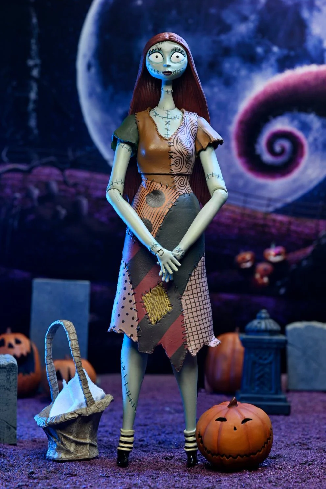

Sally Skellington is a rag doll character from Disney's The
Nightmare Before Christmas. She is the Pumpkin Queen of
Halloween Town and has a romantic interest in Jack Skellington.
Dr. Finkelstein, a mad scientist, created Sally to serve him.
Sally was kept locked away so Dr. Finkelstein could study her
and control her life. Sally is different from the other monsters
in Halloween Town because she was created by a resident.
Sally is always trying to get away from Dr. Finkelstein because she
seeks independence and has a strong desire for respect
and appreciation. She enjoys cooking, celebrating, and sewing.